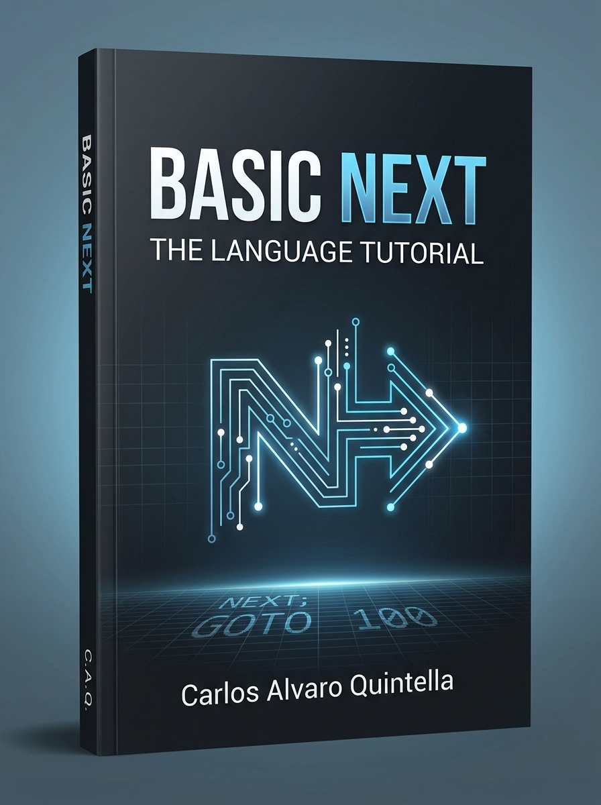

Author: Carlos Quintella
Date: August 29, 2026
License: Mozilla Public License 2.0 (MPL-2.0)

This document is the introductory tutorial for the Basic Next (BN) programming language.
Note: This book is the Version 0.3 tutorial. It is not the normative language contract. When a chapter and the specification disagree, follow
docs/language/0.3/0.3.md,docs/language/0.3/0.3.ebnf, anddocs/language/0.3/keywords.md. Features planned for later versions (packages,MATCH, generic classes, advanced concurrency) are excluded.
Basic Next is an explicitly typed, object-oriented language designed for clarity and predictable execution. It favors explicit declarations and strict types over implicit conversions or hidden behaviors. Everything in Basic Next is explicit: variable types are required, memory management is manual, and every execution path in a function must return a value.
The current reference implementation uses a straightforward pipeline comprising a lexer, a parser (producing an Abstract Syntax Tree), a semantic analyzer, and a reference interpreter.
Basic Next is built for developers who value explicit contracts, low cognitive load, and clean architecture without the burden of excessive boilerplates or imposing frameworks. It is suitable for both beginners learning fundamental computing concepts—thanks to its straightforward syntax and readable design—and experienced engineers looking for a predictable, transparent language to craft cross-platform tools, systems, and applications.
The language’s design is heavily informed by Zen principles: clarity, restraint, and deliberate choices over novelty. The core mission is to make modern programming more readable, predictable, pleasurable, and accessible.
Basic Next follows several key design principles: - Low cognitive load: Common code should be easy to understand and intent should be local. - Readability first: Source code is communication, not merely an instruction to a machine. - Explicit contracts: Types, boundaries, and effects should not be surprising. Every declaration states its type. - Keep it simple (KISS): Complexity must earn its place through a concrete problem, not anticipation. - Object-oriented by default: Behavior belongs to cohesive objects, with explicit dependencies. - Small core, broad reach: Richness belongs in external modules and host capabilities, keeping reserved words and built-in features to a minimum.
bn CLIBasic Next source files use the .bn extension and are
UTF-8 encoded. The language is distributed with a command-line tool,
bn. Install it with cargo install --path .
from this repository, or download a prebuilt binary from GitHub
Releases. The Unix manual is bn(1)
(docs/man/bn.1).
bn check <file.bn>: lexer, parser, and semantics.
Exit 0 if valid, 1 for a language diagnostic,
2 for invalid tool use or a tool failure.bn run <file.bn> [-- args...]: validate, lower to
typed BN IR, and execute Start. On success the process exit
code is Start’s result. Language errors exit
1; tool failures exit 2.bn build <file.bn>: compile to a native
executable or WebAssembly artifact using the LLVM backend.bn lex <file.bn>: print the token stream and
stop.HOST.Args[0] is the absolute executable entry given to
bn run or bn build. Further program arguments
follow --. Frontend artifacts are available with
--emit tokens, --emit ast,
--emit typed-ast, and --emit ir.
-v prints pipeline stages; -vv also prints
tokens.
Basic Next diagnostics reject invalid source before execution. There
are no warnings. Full command reference: bn(1).
A complete Basic Next program requires an entry point. The simplest
valid program consists of exactly one Start function that
prints text to the screen:
FUNCTION Start() AS VOID
PRINT "Hello, World!"
END FUNCTIONPRINT is a built-in macro that writes text to standard
output, followed by a line ending.
Start FunctionEvery Basic Next file is a module. The executable module—the one
passed to bn run—must contain exactly one function named
Start taking no parameters.
The Start function can be declared with a
VOID return type or an INTEGER return
type:
FUNCTION Start() AS INTEGER
PRINT "Running successfully."
RETURN 0
END FUNCTIONWhen Start returns an INTEGER, it must
return a value between 0 and 255. This value
is directly passed back to the host operating system as the process exit
code. When Start is VOID, a successful
completion automatically yields an exit code of 0.
Basic Next requires all statements to be contained within functions, classes, interfaces, or structs. You cannot write executable statements at the top level of a module.
Basic Next provides tools for modern development workflows:
bn-kernel): A
Python-based Jupyter kernel that evaluates Basic Next cells. Each cell
is treated as a complete program with a Start function. To
use it, install the bn-kernel Python package.plugins/vscode/ directory, this extension provides syntax
highlighting and on-save linting diagnostics powered by the
bn check compiler.To get the best development experience with syntax highlighting and automatic error checking on save, you can install the official Basic Next VS Code extension directly from the repository.
Open your terminal and navigate to the VS Code plugin directory:
cd plugins/vscodePackage the extension into a .vsix file using
vsce (requires Node.js):
npx --yes @vscode/vsce package --allow-missing-repositoryInstall the generated package into Visual Studio Code:
code --install-extension basicnext-0.3.0.vsixRestart VS Code completely after the installation to ensure the language server and debugger features load correctly.
This chapter covers the fundamental building blocks of a Basic Next program: how to store data, manipulate values, and interact with the console.
Basic Next enforces strict typing. Every variable must explicitly state its type. The language does not use type inference for bindings.
Variables are declared using the LET keyword, followed
by the name, AS, the type, and an optional initializer. In
version 0.3, you can also declare multiple variables of the same type in
a single LET binding:
LET counter AS INTEGER = 10
LET name AS STRING = "Alice"
LET c, v AS STRING = "carro", "moto"If you omit the initializer, the variable is initialized to its
type’s default value. In Basic Next, there is no uninitialized storage.
The default for numeric types is 0 or 0.0,
BOOLEAN defaults to FALSE, and
STRING defaults to an empty string "".
LET score AS INTEGER // Initialized to 0
LET active AS BOOLEAN // Initialized to FALSEConstants are declared using the CONST keyword. They
must always include an initializer and cannot be reassigned:
CONST MAX_USERS AS INTEGER = 100Note: CONST fixes the binding itself. It does not
make a referenced class or allocated pointer deeply immutable.
Basic Next features a rich set of primitive types with guaranteed, cross-platform representations.
The default numeric types are INTEGER (an alias for a
signed 32-bit integer) and FLOAT (an alias for an IEEE 754
64-bit floating-point number).
When exact memory layout is important, Basic Next provides
fixed-width types: - Signed: INT8,
INT16, INT32, INT64 -
Unsigned: BYTE (unsigned 8-bit),
UINT16, UINT32, UINT64 -
Floating-point: FLOAT32,
FLOAT64
Integer arithmetic in Basic Next never wraps or saturates implicitly.
An operation that produces a result outside the destination type’s range
raises a NUMERIC_OVERFLOW error at runtime.
Floating-point numbers follow IEEE 754 semantics and include special
values: NAN (Not a Number), INF (positive
infinity), and -INF (negative infinity).
BOOLEAN represents logical states with the keywords
TRUE and FALSE.STRING represents text. Strings are UTF-8 encoded and
enclosed in double quotes. Line breaks inside strings are not permitted
in version 0.3.Basic Next treats time as primitive data: - TIMESTAMP:
An alias for INT64 representing UTC Unix-epoch
milliseconds. - DATE, TIME,
TIMEZONE: Value types representing specific calendar and
clock concepts. Their default values are 1970-01-01,
00:00:00.000, and UTC respectively.
Basic Next expressions are strictly typed. The compiler prevents mixing incompatible types, such as adding a string to a number, without explicit conversion.
The basic arithmetic operators are +, -,
*, and ** (exponentiation). Basic Next
distinguishes strictly between integer and floating-point division: -
/ always performs floating-point division and returns a
FLOAT, even if both operands are integers. -
DIV performs Euclidean integer division. - %
performs Euclidean modulo (the remainder is always non-negative).
LET half AS FLOAT = 5 / 2 // 2.5
LET quotient AS INTEGER = 5 DIV 2 // 2
LET remainder AS INTEGER = 5 % 2 // 1The + operator also concatenates STRING
values.
Equality (=) and inequality (<>)
require operands to have the exact same static type, outside of allowed
numeric widening. You cannot implicitly compare a STRING to
FALSE or an INTEGER to a FLOAT
without explicit conversion.
IF counter = 10 THEN
PRINT "Limit reached"
END IFThe operators AND, OR, NOT,
and XOR change their behavior based on the static type of
their operands: - When used with BOOLEAN, they perform
logical operations. AND and OR use
short-circuit evaluation. - When used with integer types, they perform
bitwise operations.
Basic Next also provides SHL (shift left) and
SHR (shift right) for integers.
Because assignments and comparisons do not implicitly widen or coerce
values, you must use the AS keyword to convert values
explicitly:
LET count AS INTEGER = 3
LET ratio AS FLOAT = count AS FLOATConverting a floating-point number to an integer truncates toward
zero. Conversions are checked at runtime: attempting to convert a value
that falls outside the target type’s range raises an
INVALID_NUMERIC_CONVERSION error.
AS BOOLEAN is a special case: for numeric types,
0 becomes FALSE and any non-zero value
(including NAN) becomes TRUE. For strings,
"" is FALSE and any non-empty string is
TRUE.
Interacting with the console uses straightforward built-in macros.
PRINT writes text to standard output and then a line
ending. Several expressions are concatenated with no separator. With no
expression it writes a blank line.
PRINT "Processing user: ", name
PRINT "Processing user: " + nameINPUT() reads a line from standard input. Because the
input might end, it returns a compound alternative type:
STRING OR EOF.
LET line AS STRING OR EOF = INPUT()
IF line IS EOF THEN
PRINT "End of input stream."
END IFTo manage the terminal window, pass the HOST.Console
capability to explicitly access terminal control methods.
HOST.Console is a primary expression.
IMPORT HOST.Console AS Console
Console.Cls()
Console.Beep()
Console.PrintAt(1, 1, "Top left corner")Basic Next provides explicit and block-scoped control flow
constructs. Every block has a strict opening and closing keyword, such
as END IF or END WHILE.
The IF statement evaluates a BOOLEAN
expression and executes a block of code if the condition is
TRUE. The condition must be strictly BOOLEAN;
Basic Next does not implicitly convert integers or strings to boolean
values for conditions.
LET active AS BOOLEAN = TRUE
IF active THEN
PRINT "System is active."
ELSE
PRINT "System is offline."
END IFEvery IF block must be explicitly closed with
END IF.
However, in version 0.3, a conditional containing exactly one simple
statement per branch may remain on one physical line and does not
require an END IF:
IF x = y THEN PRINT z
IF ready THEN StartServer() ELSE PRINT "not ready"Basic Next offers two forms of indefinite loops: WHILE
and REPEAT.
WHILE LoopA WHILE loop checks its BOOLEAN condition
before executing the block. If the condition is initially
FALSE, the loop body never executes.
LET counter AS INTEGER = 0
WHILE counter < 5
PRINT counter
counter += 1
END WHILEREPEAT LoopA REPEAT loop executes its block at least once. It
evaluates a BOOLEAN post-condition using the
UNTIL keyword at the end of the block. The block repeats as
long as the condition remains FALSE.
Note that UNTIL is part of the loop’s logic, but the
block itself must still be closed with END REPEAT.
LET value AS INTEGER = 10
REPEAT
value -= 1
UNTIL value = 0
END REPEATFor iterating over ranges or collections, Basic Next provides
FOR and FOR EACH.
FOR LoopA counted FOR loop iterates a binding over a numeric
range. You must declare the loop binding and its type explicitly. The
start, end, and optional STEP expressions are evaluated
exactly once before the loop begins.
FOR i AS INTEGER = 0 TO 9 STEP 2
PRINT i
END FORIf you omit the STEP clause, it defaults to
1. A step can be negative, in which case the loop continues
while the binding is greater than or equal to the end value. The loop
binding updates automatically at the end of the block.
FOR EACH LoopFOR EACH iterates in index order over a collection. In
version 0.3, this is restricted to the outermost dimension of fixed-size
vectors. The loop binding is read-only and its declared type must
perfectly match the vector’s element type.
LET primes AS INTEGER[3] = [2, 3, 5]
FOR EACH prime AS INTEGER IN primes
PRINT prime
END FORBasic Next does not have generic break or
continue keywords. Instead, early loop exits must
explicitly name the loop type they are targeting: EXIT FOR,
EXIT WHILE, or EXIT REPEAT.
Similarly, skipping to the next iteration uses
CONTINUE FOR, CONTINUE WHILE, or
CONTINUE REPEAT.
FOR i AS INTEGER = 1 TO 10
IF i = 5 THEN
CONTINUE FOR
END IF
IF i = 8 THEN
EXIT FOR
END IF
PRINT i
END FORBy naming the loop construct, you make your intent clear and avoid accidental behavioral changes if loops are refactored or nested differently in the future.
If you encounter a fatal condition and must terminate the entire
program immediately, use the STOP statement.
STOP requires a single INTEGER expression
that produces a value between 0 and 255. This
value is passed directly to the host operating system as the process
exit code.
IF fatalError THEN
PRINT "Halting immediately."
STOP 1
END IFFor standard, graceful program termination, you should instead
RETURN an integer from your Start function.
STOP should be reserved for exceptional halting.
Basic Next provides mechanisms to group data together and explicitly manage missing or erroneous values. It heavily favors explicit structures over hidden state or implicit nullability.
A fixed-size vector stores multiple values of the same type sequentially. Vectors are defined by an element type followed by one or more dimensions inside brackets.
LET dimensions AS INTEGER[3] = [10, 20, 30]
LET grid AS INTEGER[2][3] = [[1, 2, 3], [4, 5, 6]]For function signatures, fields, and parameters, each dimension must
be a non-negative integer literal. However, in version 0.3, local
LET bindings can use declaration-time vector dimensions
that are evaluated once at binding time:
LET n AS INTEGER = 4
LET values AS INTEGER[n] = [1, 2, 3, 4]Indices are zero-based, running from 0 to one less than
the dimension. Accessing an index outside this range raises an
INDEX_OUT_OF_BOUNDS runtime error.
If you declare a vector without an initializer, each element is automatically assigned its type’s default value:
LET values AS INTEGER[5] // A vector of five 0s
values[2] = 42In Basic Next, vectors have value semantics for assignments and parameter passing. Assigning a vector to a new variable copies all of its elements. The new vector does not alias the old one; modifying one will not affect the other.
STRUCT)A STRUCT declares a small, composite value type with
named fields. Structs cannot contain methods, static fields,
constructors, or visibility modifiers (all fields are implicitly
public).
STRUCT Point
X AS FLOAT = 0.0
Y AS FLOAT = 0.0
END STRUCT
LET origin AS Point
LET moved AS Point = origin
moved.X = 10.0Like vectors, structs have value semantics. Assignment or parameter
passing creates a complete copy of the field values. Changing
moved.X in the example above does not affect
origin.X. The NEW and DELETE
keywords are not used with structs.
Strings in Basic Next are UTF-8 encoded, and their contents can be read using zero-based indexing to access individual Unicode scalars (characters).
LET greeting AS STRING = "Hello"
LET firstChar AS STRING = greeting[0] // "H"String indexing is read-only. Attempting to assign to a string index
(e.g., greeting[0] = "J") results in a static error.
Accessing an index outside the string’s length raises an
INDEX_OUT_OF_BOUNDS runtime error.
Basic Next does not allow variables to be implicitly null or missing.
If a variable might contain an absence marker or an error, you must
explicitly declare it using an alternative type with the OR
keyword.
Basic Next provides specific singleton values to represent the
absence of data: - EOF: End of input. - NA: A
missing observation or data point. - NULL: The explicit
absence of an object reference or pointer.
LET line AS STRING OR EOF = INPUT()You cannot use a variable with an alternative type directly if the
operation requires a concrete type. You must first test and narrow the
type using the IS operator.
ISThe IS operator tests if a value matches a specific
alternative or singleton. When used inside an IF condition,
the compiler automatically narrows the type for the corresponding
branch.
IF line IS EOF THEN
PRINT "Stream ended."
ELSE
PRINT line
END IFIn the ELSE branch above, the compiler knows
line cannot be EOF, so its type is narrowed to
STRING, making it safe to use in PRINT.
In version 0.3, if an IF statement has no
ELSE branch and all of its branches unconditionally
terminate (e.g., via RETURN or STOP), the type
is automatically narrowed in the remainder of the block:
LET file AS FS.File OR Error = FS.Open("config.txt", FS.READ)
IF file IS Error THEN
RETURN
END IF
// After the returning branch, 'file' is safely narrowed to FS.File
LET closed AS VOID OR Error = file.Close()You can also test for NULL or NA using
IS NULL or IS NA.
Basic Next does not use exceptions for error handling. Fallible
operations explicitly return their success value or a built-in
Error object.
The Error object provides standard properties:
Code AS INTEGER and Message AS STRING.
Functions that might fail indicate this by returning their standard type
OR Error.
IMPORT HOST.FileSystem AS FS
LET file AS FS.File OR Error = FS.Open("config.txt", FS.READ)
IF file IS Error THEN
PRINT "Failed to open file: " + file.Message
ELSE
PRINT "File opened successfully."
file.Close()
END IFBy returning Error as an alternative type, Basic Next
forces the caller to explicitly check for and handle the error before
accessing the underlying value, eliminating unhandled exceptions at
runtime.
Basic Next programs are composed of functions organized into files called modules. The language requires explicit signatures, strictly verifies return paths, and uses a disciplined import system to prevent namespace pollution.
A function is declared using the FUNCTION keyword,
followed by its parameter list, the AS keyword, and its
return type. The block is closed with END FUNCTION.
FUNCTION Add(a AS INTEGER, b AS INTEGER) AS INTEGER
RETURN a + b
END FUNCTIONIf a function does not return a value, its return type must be
explicitly declared as VOID. In a VOID
function, you can omit the RETURN statement entirely, or
use a bare RETURN for an early exit.
FUNCTION LogMessage(msg AS STRING) AS VOID
IF msg = "" THEN
RETURN
END IF
PRINT msg
END FUNCTIONBasic Next employs strict return analysis at compile time. For any
function with a return type other than VOID, the compiler
verifies that every possible execution path ends with a valid
RETURN statement (or a STOP).
If a path could theoretically reach END FUNCTION without
returning a value, the analyzer rejects the program. The analyzer does
not assume that loops run forever; a RETURN hidden
exclusively inside a WHILE or REPEAT loop does
not satisfy the return rule.
Basic Next supports treating functions as first-class values,
allowing you to pass them as arguments or store them in variables. The
type of a function value is written as
FUNCTION(parameter-types) AS return-type.
FUNCTION Double(value AS INTEGER) AS INTEGER
RETURN value * 2
END FUNCTION
FUNCTION Start() AS VOID
LET transform AS FUNCTION(INTEGER) AS INTEGER = Double
LET result AS INTEGER = transform(21)
PRINT result
END FUNCTIONIn version 0.3, only module-level functions and STATIC
class methods can be used as function values. Instance methods cannot be
stored this way, and there are no lambdas or closures.
Every .bn source file is a module. By default, any
FUNCTION, CLASS, STRUCT, or
INTERFACE declared in a module is private to that
module.
To make a declaration visible to other files, you must precede it
with the EXPORT keyword:
// In MathUtils.bn
EXPORT FUNCTION Square(n AS INTEGER) AS INTEGER
RETURN n * n
END FUNCTION
FUNCTION Helper() AS VOID
// Only visible inside MathUtils.bn
END FUNCTIONTo use exported declarations from another module, you must import it
using the IMPORT keyword. Every import requires an explicit
local alias using AS.
// In main.bn
IMPORT MathUtils AS Math
FUNCTION Start() AS VOID
PRINT Math.Square(5)
END FUNCTIONImported members are only accessible through their alias (e.g.,
Math.Square). Basic Next never injects imported names into
your module’s global scope, ensuring that two modules can export
functions with the same name without colliding.
Module resolution happens relative to the project root (the directory
of the executable module), typically under a modules/
directory. Language standard-library modules resolve from
modules/bn/. For example,
IMPORT BNData AS Data resolves to
modules/bn/BNData.bn. Host capabilities use the
HOST root, such as IMPORT HOST.Random AS R.
BNMath is a standard-library module and requires
IMPORT BNMath AS Math.
Basic Next checks for import cycles and will reject the program if a circular dependency is detected.
While Basic Next provides STRUCT for simple value types,
it uses CLASS and INTERFACE for reference
types, encapsulation, and polymorphism.
CLASS)A CLASS defines a reference type. Unlike a struct,
assigning a class instance to a new variable does not copy the
underlying data; it copies the reference. Both variables will point to
the same object in memory.
Class instances are always allocated dynamically using the
NEW keyword.
LET customer AS Customer = NEW Customer(10)(Note: The explicit lifecycle of class instances, including the
DELETE keyword, is covered in detail in Chapter 7: Memory
Management).
SELFBy default, all fields and methods within a class are
PRIVATE. Private members are scoped to the declaring class,
meaning any method of that class can access the private members of any
instance of that same class.
To make a member available to external code, you must explicitly mark
it as PUBLIC.
Inside a class method, you cannot access instance fields or methods
using an unqualified name. You must always explicitly qualify instance
access using the SELF keyword.
CLASS Counter
PRIVATE count AS INTEGER = 0
PUBLIC FUNCTION Increment() AS VOID
SELF.count += 1
END FUNCTION
END CLASSA class can define exactly one constructor to initialize its state. Overloading is not supported in version 0.3.
The constructor is declared as FUNCTION CONSTRUCTOR with
an optional parameter list. It does not have a return type and is
invoked automatically when NEW is called. If you do not
declare a constructor, the compiler provides an implicit, parameterless
PRIVATE constructor.
CLASS Customer
PRIVATE id AS INTEGER
PUBLIC FUNCTION CONSTRUCTOR(id AS INTEGER)
SELF.id = id
END FUNCTION
END CLASSYou may also define a destructor using
FUNCTION DESTRUCTOR(). The destructor takes no parameters
and has no return type. It executes exactly once when the instance is
explicitly freed using DELETE.
Basic Next supports class-level state and behavior through the
STATIC keyword. A static field exists exactly once per
class and must be initialized. A static method cannot use the
SELF keyword or access instance fields.
Static members are always accessed through the class name, never through an instance.
CLASS Session
PRIVATE STATIC nextId AS INTEGER = 0
PUBLIC STATIC FUNCTION NextId() AS INTEGER
Session.nextId += 1
RETURN Session.nextId
END FUNCTION
END CLASS
// Accessing the static method
LET id AS INTEGER = Session.NextId()Re-entering the initialization of static fields raises a
STATIC_INITIALIZATION_CYCLE error at runtime, ensuring
partially initialized state is never observable.
Basic Next supports single class inheritance using the
EXTENDS keyword. A subclass inherits the methods and fields
of its base class.
If the base class has a constructor, the subclass constructor must
call it as the first statement using the SUPER keyword.
CLASS Animal
PUBLIC FUNCTION Speak() AS VOID
PRINT "..."
END FUNCTION
END CLASS
CLASS Dog EXTENDS Animal
PUBLIC FUNCTION CONSTRUCTOR()
SUPER()
END FUNCTION
PUBLIC FUNCTION Speak() AS VOID
PRINT "Woof"
END FUNCTION
END CLASSMethods in the subclass automatically override methods in the base class with the same signature. Virtual dispatch ensures the correct method is called at runtime, even when the object is accessed through a base class reference (upcast).
LET myDog AS Dog = NEW Dog()
LET myAnimal AS Animal = myDog // Upcast
myAnimal.Speak() // Prints "Woof"INTERFACE and IMPLEMENTS)An INTERFACE is a named public contract consisting only
of function signatures. It cannot contain fields, constructors, or
implementation bodies. Interface members are implicitly public.
INTERFACE Printable
FUNCTION Print() AS VOID
END INTERFACEA class implements one or more interfaces explicitly using the
IMPLEMENTS keyword followed by a comma-separated list of
interface names (which can be imported from other modules, e.g.,
IMPLEMENTS Pets.Named). The class must provide a
PUBLIC instance method for every required signature,
matching the parameter count, types, and return type perfectly.
CLASS Report IMPLEMENTS Printable
PUBLIC FUNCTION Print() AS VOID
PRINT "Report data"
END FUNCTION
END CLASSAn interface name acts as a type. A class reference can be assigned to a variable typed as an interface it implements. This implicit upcast preserves the object reference but restricts access to only the interface’s members. In version 0.3, you cannot downcast an interface value back to a concrete class.
Basic Next version 0.3 does not feature a garbage collector. Memory management is strictly manual. Developers are responsible for allocating memory when needed and explicitly freeing it when it is no longer required.
NEW and DELETE)The NEW keyword is the sole mechanism for dynamic
allocation. It is used to create class instances or contiguous typed
memory regions.
When you allocate a class instance, NEW executes the
constructor. When you are finished with the object, you release it using
DELETE, which runs the class’s DESTRUCTOR (if
defined) before freeing the memory.
LET customer AS Customer = NEW Customer(10)
// ... use the object ...
DELETE customerIf a constructor fails, the partially constructed object is discarded
without executing the destructor. At program termination, the runtime
recovers any memory not released by DELETE, but destructors
are not run for those leaked objects. DELETE is
the only deterministic destruction point.
Pointers reference dynamically allocated, contiguous numeric data. In version 0.3, pointer elements must be numeric types; pointers to strings, booleans, or classes are excluded.
There are three ways to declare a pointer type, depending on its size constraints:
POINTER TO TYPEPOINTER TO TYPE[length]POINTER TO TYPE[]// Allocating a single value
LET value AS POINTER TO INTEGER = NEW INTEGER
value[0] = 42
DELETE value
// Allocating a dynamic region
LET count AS INTEGER = 1024
LET samples AS POINTER TO FLOAT[] = NEW FLOAT[count]
samples[0] = 1.5
DELETE samplesAllocated memory is zero-initialized (filled with the type’s default
value). Pointer indexing is strictly bounds-checked by the runtime, and
pointer arithmetic is not permitted in version 0.3. In the current
version, you can also use LEN() on region pointers
(POINTER TO TYPE[length] and
POINTER TO TYPE[]) to get their element count, but
LEN on a single-value pointer remains a static error.
Pointer assignment and parameter passing copy the pointer handle
(creating an alias) without transferring ownership implicitly.
DELETE accepts any alias to the base pointer originally
returned by NEW.
Because memory is managed manually, Basic Next enforces strict runtime checks to prevent silent corruption:
NULL.
Indexing or dereferencing a NULL pointer—or attempting to
DELETE NULL—raises a NULL_POINTER_ACCESS
error. You must explicitly test optional pointers using
IS NULL.USE_AFTER_DELETE error.DOUBLE_DELETE error. An
allocation is considered deleted while its destructor runs, so a
reentrant DELETE also triggers this error.INDEX_OUT_OF_BOUNDS error.ALLOCATION_SIZE_INVALID. If
the requested size overflows or exceeds the host’s capacity,
ALLOCATION_SIZE_OVERFLOW or
ALLOCATION_TOO_LARGE is raised.Basic Next decouples the core language from the operating system.
HOST is the only built-in interface object. All
BN* facilities are external modules and must be imported
explicitly; their detailed contracts live in separate appendices.
BNMath namespaceThe mathematics standard library is the BNMath module.
Every use requires an import; the alias is used for member calls.
IMPORT BNMath AS Math
LET root AS FLOAT = Math.SQRT(9.0)
LET rounded AS FLOAT = Math.ROUND(3.14159, 2)
LET lower AS FLOAT = Math.FLOOR(3.9)BNMath provides strict IEEE 754 implementations for
common mathematical functions. Operations return FLOAT
unless restricted to integers.
The available surface includes: - Mathematical and exponential
functions: ABS, MIN, MAX,
SIGN, FLOOR, CEIL,
TRUNC, ROUND, SQRT,
HYPOT, FMA, EXP,
LOG, LOG10, LOG2,
POW. - Trigonometry: SIN, COS,
TAN, ASIN, ACOS,
ATAN, ATAN2. - Text parsing:
VAL(text AS STRING) AS FLOAT. - Descriptive statistics:
MEAN, MEDIAN, MODE,
STDEV, VARIANCE, RANGE,
QUARTILE1, QUARTILE3. - Range constants:
MAX_INTEGER, MIN_INTEGER,
MAX_FLOAT, MIN_FLOAT (and width-specific
variants).
Interaction with the underlying operating system—such as reading
command-line arguments or checking the system clock—requires explicitly
importing a capability from the HOST root.
HOST.ArgsHOST.Args provides access to the arguments passed by the
host. Only the executable module (the module containing
the Start function) is permitted to access
HOST.Args. It does not require an IMPORT
statement.
You access the arguments using indexing
(HOST.Args[index]) and check the total number using
LEN(HOST.Args). Index 0 is the absolute
executable name or path supplied by the host. Further program arguments
follow --.
FUNCTION Start() AS VOID
IF LEN(HOST.Args) > 1 THEN
PRINT "First user argument: " + HOST.Args[1]
END IF
END FUNCTIONHOST.ClockIMPORT HOST.Clock AS ClockHOST.Clock provides time measurements: -
Clock.Now() AS TIMESTAMP: Returns the current signed
UTC Unix-epoch time in milliseconds. -
Clock.Timer() AS INT64: Returns a monotonically
increasing count of nanoseconds. It does not represent a calendar time
and is only used for measuring elapsed durations safely.
HOST.NumProcsHOST.NumProcs() needs no import and returns the logical
processor count available to the current process. This respects host or
container limits where they are reported, so it is appropriate for
selecting a bounded worker-pool size rather than detecting physical CPU
cores. It is available in the native interpreter.
LET workers AS INTEGER OR Error = HOST.NumProcs()HOST.ConsoleThe runtime provides a default console used implicitly by
PRINT and INPUT(). To interact explicitly with
the terminal window, use the HOST.Console capability.
HOST.Console provides methods for clearing the screen,
emitting a beep, positioning the cursor, and querying the window
size:
IMPORT HOST.Console AS CON
CON.Cls()
CON.Beep()
CON.PrintAt(1, 1, "Hello at top-left") // 1-based coordinates
LET cols AS INTEGER = CON.NumCols()
LET rows AS INTEGER = CON.NumRows()HOST.RandomHOST.Random provides pseudorandom number generation.
IMPORT HOST.Random AS R
LET chance AS FLOAT = R.Random() // Returns a FLOAT in [0, 1)
R.Seed(42) // Explicitly seed the generatorHOST.FileSystemHOST.FileSystem provides access to the local file
system. The FS.File class is used to read and write
files.
IMPORT HOST.FileSystem AS FS
LET file AS FS.File OR Error = FS.Open("data.txt", FS.READ)
IF file IS Error THEN
PRINT "Could not open file"
ELSE
LET content AS STRING OR Error = file.ReadAll()
file.Close()
END IFHOST.NetHOST.Net is a native-host capability added in version
0.3 for IPv4/IPv6 addressing, system resolution, TCP, UDP, bounded ICMP
Echo, and direct-neighbor lookup. The operating system owns the
networking stack.
IMPORT HOST.Net AS NetBasic Next provides several provider-backed modules that must be explicitly imported:
BNData: Contract documented in Appendix H.BNWeb: Added in version 0.3, it provides an HTTP
client/server, routes, filters, and URL boundaries. Contract in Appendix G.BNLog: Added in version 0.3, it provides structured
application and access logging. Contract in Appendix F.BNJson: Added in version 0.3, it provides bounded JSON
parsing and serialization. Contract in Appendix
E.Basic Next distinguishes strictly between instant-in-time timestamps and human calendar values.
TIMESTAMP: An alias for INT64 representing
an exact moment (milliseconds since the UTC Unix epoch). It supports
standard integer arithmetic.DATE: An immutable Gregorian date (e.g.,
2026-08-25). Logically a 32-bit day count.TIME: An immutable time of day (e.g.,
22:07:20.000). Logically a 32-bit millisecond count.TIMEZONE: An IANA identifier (e.g.,
America/Sao_Paulo or UTC). The value stores
that identifier; the interpreter does not load a TZDB database or apply
zone rules.Calendar, formatting, and time-zone operations use explicit calls in the temporal library rather than implicit string conversions.
LEN and
SIZEOFBasic Next provides two built-in forms for measuring size. Both
evaluate their operand and return an INTEGER.
LEN(value)Returns the logical count of items: - For a numeric value, the length
is 1. - For a STRING, it is the number of
Unicode scalar values (characters). - For a fixed-size vector, it is the
total number of elements across all dimensions.
SIZEOF(value)Returns the portable byte size of the value’s representation, with no
padding. - BOOLEAN is 1 byte. - DATE and
TIME are 4 bytes. - STRING returns the exact
UTF-8 byte length of its text. - Vectors and structs return the sum of
their elements’ sizes.
SIZEOF is a static error for pointers, interfaces,
alternative types, and structs containing dynamically sized strings.
Basic Next version 0.3 handles input/output (I/O) and concurrency through explicit capabilities and external modules. This design ensures that the core language remains deterministic and predictable, while providing powerful tools for building network services and concurrent programs.
All I/O in Basic Next is synchronous and bounded. The language does
not use implicit asynchronous runtimes (like async/await in
other languages). Instead, operations block until they complete or hit
an explicit timeout, returning either the requested data or an explicit
Error object.
Access to local files is managed through
HOST.FileSystem.
IMPORT HOST.FileSystem AS FS
LET file AS FS.File OR Error = FS.Open("config.txt", FS.READ)
IF file IS Error THEN
PRINT "Error opening file: " + file.Message
ELSE
LET data AS STRING OR Error = file.ReadAll()
file.Close()
END IFRaw network access is provided by the native host capability
HOST.Net. It supports IPv4 and IPv6 addressing, system DNS
resolution, TCP, UDP, and bounded ICMP Echo. The operating system owns
the underlying network stack.
IMPORT HOST.Net AS NetFor HTTP communication, you should use the BNWeb module
instead of raw sockets. BNWeb consumes
HOST.Net internally to provide a bounded request/response
model, routing, filters, and local HTTP/1.1, HTTP/2, and HTTPS server
adapters.
IMPORT BNWeb AS WebBasic Next version 0.3 introduces concurrency through the
BNDispatch module. While the language itself does not have
a PARALLEL keyword or built-in threads,
BNDispatch provides a robust, host-backed task
dispatcher.
IMPORT BNDispatch AS DispatchBNDispatch provides bounded serial and concurrent
queues, named-function tasks, tickets, joins, groups, barriers,
semaphores, and mutexes.
These APIs are deliberately separated from the core language and do not expose native thread handles directly to the programmer. Instead, you dispatch tasks to queues.
To determine the available parallel capacity of the host system, you
can use HOST.NumProcs(), which exposes the logical
processor count available to bounded dispatch selection.
LET cores AS INTEGER OR Error = HOST.NumProcs()
IF cores IS Error THEN
cores = 2 // Fallback
END IFTo prevent resource exhaustion and ensure determinism: - Queue
workers are limited to a maximum of 64. - Pending work items are limited
to 1,024. - Lifecycle waits use explicit timeouts ranging from 1 to
60,000 milliseconds. - Synchronization operations (like acquiring a
mutex or waiting on a barrier) return an Error on timeout
or if invalid bounds are supplied.
This explicit error handling forces the application to deal with resource pressure, timeouts, and concurrency limits gracefully, rather than crashing or hanging indefinitely.
Because Basic Next specifies behavior transparently, the exact language specifications and technical lists are maintained in their respective normative files within the repository.
Basic Next maintains a strict registry of reserved words to guarantee backward compatibility. A word is only reserved in its exact uppercase spelling.
For the complete list of keywords, their semantic meanings, and decision statuses, see the normative document: - 0.3 Keyword Registry
Basic Next is designed with a zero-warning policy. Diagnostics either reject the source entirely or report a clear runtime failure.
Diagnostic behavior follows the accepted language contract and command reference:
The structural grammar of Basic Next is strictly defined using Extended Backus-Naur Form (EBNF). The EBNF focuses exclusively on parsing valid syntax, while semantic rules (such as return analysis) are enforced by the compiler.
For the definitive structural grammar of version 0.3, see:
bn
ToolThe Unix manual for the reference tool is bn(1). Installation and
troubleshooting are in docs/project/usage.md.
The normative language text is 0.3.md.
External provider-backed modules are documented in separate appendices:
BNJson is an external provider-backed module. It is not
part of the Basic Next core and every consumer must import it
explicitly:
IMPORT BNJson AS JsonThe accepted 0.3 contract, ownership rules, limits, and errors are
defined in docs/language/0.3/bnjson.md.
Providers may use Rust implementations, but must preserve the documented
behavior.
BNLog is an external structured-logging module, not a
language primitive. Import it explicitly:
IMPORT BNLog AS LogThe 0.3 API, JSON Lines format, bounded fields, escaping, and
transport policy are specified in docs/language/0.3/bnlog.md.
BNWeb is the external standard module for web
communication. It provides HTTP client and server adapters, routing,
filtering, and a shared request/response pipeline.
Because BNWeb is an external module, you must import it
explicitly:
IMPORT BNWeb AS WebBNWeb is built on top of HOST.Net for all
socket and DNS resolution operations. It does not create its own network
capability. Furthermore, it integrates with BNLog for
structured access logging.
You must import capabilities directly; importing BNWeb
does not expose Net or Log implicitly:
IMPORT HOST.Net AS Net
IMPORT BNLog AS Log
IMPORT BNWeb AS WebBNWeb follows a strict URL boundary to prevent security
flaws like path traversal and request smuggling: 1. Parse -> Validate
-> Canonicalize -> Route Match -> Ordered Filters -> Handler
2. Invalid or ambiguous URLs are rejected immediately with
400 Bad Request. 3. Encoded path separators
(%2F, %5C) and ./..
segments are rejected.
The framework ensures the original malformed string is never executed as a route or filesystem path.
Version 0.3 requires HTTP/1.1, HTTP/2, TLS, and ALPN.
To manage expectations and scope, the following advanced features are
explicitly deferred to version 0.4: * HTTP/3
and QUIC: Not supported in the 0.3 pipeline. *
Concurrent Transport Callbacks: BNWeb
transport-to-BN threading relies on sequential bounds for now;
concurrent dispatch integration is scheduled for 0.4. * HTTPS
Client Trust-Root Management: Advanced client-side certificate
authority configurations. * Transport Access-Log
Integration: Deeply integrated native transport logging.
BNData is an external data-provider module. It is not
built into the core; use an explicit import:
IMPORT BNData AS DataIts accepted 0.3 surface and provider requirements are maintained in
the module contract and conformance fixtures under
docs/language/0.3/ and tests/modules/.
Every BN* facility is an external module backed by a
host/provider interface. External modules:
IMPORT and alias;HOST is the sole built-in interface object in the
language specification. The planned BNThreads,
BNCrypto, and other future modules follow these same
rules.
BNDispatch is a host-backed external module providing
concurrency primitives and job orchestration. It is explicitly separated
from the core language to ensure safety and determinism.
IMPORT BNDispatch AS DispatchBasic Next does not expose native OS thread handles, nor does it
include a PARALLEL language keyword in version 0.3.
Instead, BNDispatch provides an abstraction based on
dispatch queues, tasks, and synchronization primitives:
Join (wait for completion) or
Cancel the operation.To avoid resource exhaustion and deadlocks, BNDispatch
strictly limits execution contexts and forces bounded wait times:
64.1,024 pending tasks.1 to 60,000 milliseconds.Synchronization operations return an Error on timeout or
invalid bounds. This forces the programmer to explicitly handle resource
pressure:
// Conceptual example of bounded synchronization
LET mtx AS Dispatch.Mutex = Dispatch.CreateMutex()
LET lock AS VOID OR Error = mtx.Acquire(5000) // 5000ms timeout
IF lock IS Error THEN
PRINT "Failed to acquire lock: " + lock.Message
ELSE
// Critical section
mtx.Release()
END IFFor concurrent queues, you can query the host system’s logical processor count to tune the number of concurrent workers dynamically, avoiding over-subscription:
LET cores AS INTEGER OR Error = HOST.NumProcs()While BNDispatch introduces powerful concurrency, full
integration of concurrent threading with BNWeb transport
callbacks remains deferred to version 0.4.